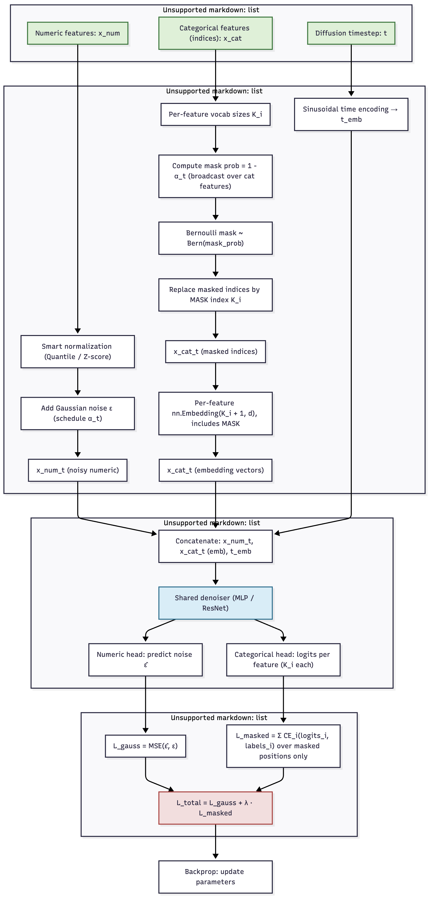
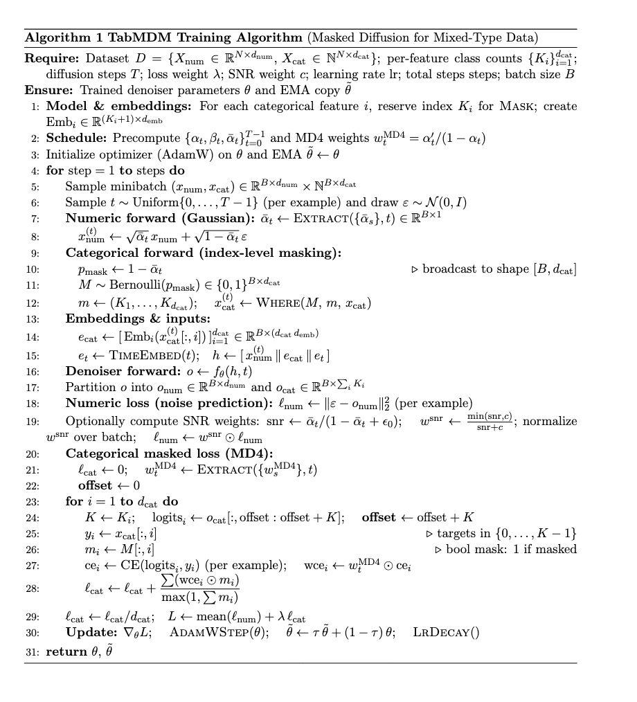
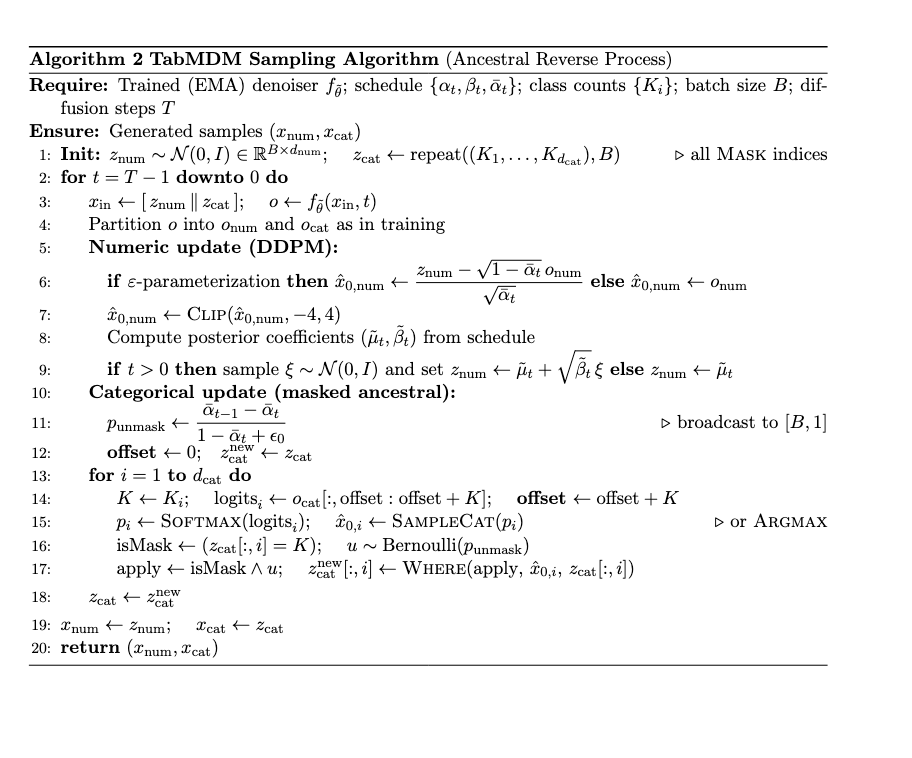
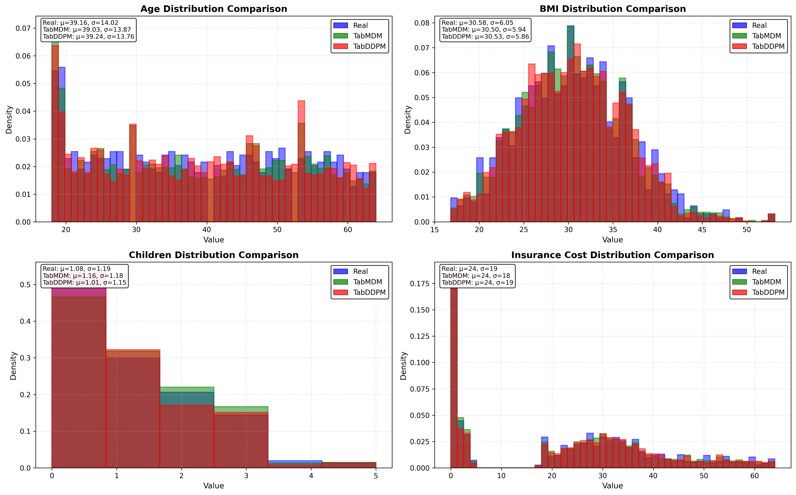
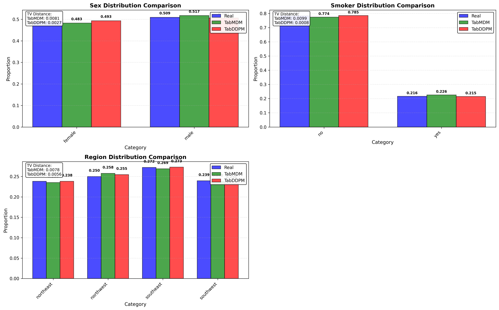
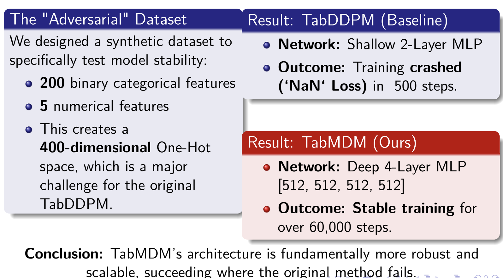

Abstract
Real-world datasets often contain strict logical relationships; like “city -> state” or “total = price x quantity”, that current synthetic data generators fail to preserve. This leads to inconsistencies that reduce trust and usefulness in privacy-sensitive applications.
We developed a Compress-Generate-Restore (CGR) framework that separates logical reasoning from statistical modeling across three stages: an LLM-guided compression step to extract and reduce deterministic dependencies, a hybrid masked diffusion model to generate realistic data in the compressed space, and a deterministic restoration step to rebuild full tables with guaranteed logical consistency.
Our diffusion model integrates Gaussian and masked diffusion to handle numerical and categorical features efficiently, avoiding the instability of one-hot encodings in prior work. Preliminary experiments show stable generation and strong fidelity on benchmark datasets, and ongoing work aims to fine-tune the LLM for automatic logical compression and evaluate zero-shot generalization.
The CGR approach introduces a principled way to make synthetic tabular data both statistically faithful and logically trustworthy.
Architecture
A figure that conveys the main idea behind the project or the main application being addressed.

In Depth Explanation of workflow
This flowchart shows the TabMDM training process. It starts with three inputs: Numerical features (x_num), Categorical features (x_cat), and a Diffusion timestep (t).
The numerical branch normalizes the features, adds Gaussian noise based on the timestep, and outputs noisy numeric data (x_num_t).
The categorical branch uses the timestep to calculate a mask probability, randomly masks the category indices, and then converts these indices into embedding vectors (x_cat_t).
The time branch converts the timestep (t) into a sinusoidal time embedding (t_emb).
These three outputs (x_num_t, x_cat_t, and t_emb) are concatenated and fed into a single shared denoiser network, like an MLP or ResNet.
This network has two output heads: a numeric head that predicts the noise (epsilon) and a categorical head that predicts the logits for the masked categories.
Two separate losses are calculated: L_gauss (MSE loss) for the numeric prediction and L_masked (Cross-Entropy loss) for the categorical predictions.
Finally, these two losses are added together to get the total loss (L_total), which is used to update the model's parameters through backpropagation.
Introduction / Background / Motivation
What did you try to do? What problem did you try to solve? Articulate your objectives using absolutely no jargon.
We wanted to find a better way to create synthetic data tables that look and behave like real-world data. Today’s artificial data often makes simple mistakes—for example, generating a city that doesn’t belong to the given state, or totals that don’t match prices and quantities. These errors make the data unreliable for training or testing machine-learning systems. Our goal was to design a method that produces realistic, error-free data by understanding and respecting the logical relationships inside the data.
How is it done today, and what are the limits of current practice?
Most existing tools try to learn everything at once: the patterns in the data and the logical rules that tie values together. Models such as GANs, VAEs, and even large language models often capture general trends but fail to enforce exact relationships. They can be unstable, miss rare cases, or ignore fixed rules entirely. As a result, the generated data may look statistically correct but still break important logical connections that real data must obey.
Who cares? If you are successful, what difference will it make?
If we can generate data that is both realistic and logically sound, it will help researchers, companies, and policymakers use synthetic data safely without exposing private information. Reliable synthetic data can support medical research, financial modeling, and social-science studies where privacy or limited access prevents sharing real data. Our work aims to make synthetic data trustworthy enough to replace sensitive datasets in many practical applications.
Approach
What did you do exactly? How did you solve the problem? Why did you think it would be successful? Is anything new in your approach?
We developed a Compress-Generate-Restore (CGR) framework that decouples logical reasoning from statistical modeling through three stages:
Stage 1 (Current): LLM-Guided Compression - We are fine-tuning an LLM to act as a symbolic reasoning engine that identifies deterministic relationships (hierarchical dependencies like zip->city, functional dependencies like revenue=price×units, and temporal ordering) and compresses tables into a logically minimal core.
Stage 2 (Completed): Hybrid Diffusion Generation - We successfully implemented a specialized masked diffusion model that processes compressed tables using Gaussian diffusion for numerical features and masked diffusion with learnable embeddings for categorical features, avoiding TabDDPM's one-hot encoding problems. See the training algorithm and sampling algorithm diagrams for implementation details.
Stage 3 (Planned): Deterministic Restoration - Apply predefined restorer functions to reconstruct full tables, guaranteeing 100% logical consistency by design.
Novel aspects: (1) LLM as structural analyzer enforces logic through compression, not soft penalties (2) unified mixed-type diffusion resolves numerical instability with high-cardinality categories (3) zero-shot extrapolation benchmark tests cross-domain generalization.
What problems did you anticipate? What problems did you encounter? Did the very first thing you tried work?
Anticipated challenges from literature analysis: High-cardinality categories cause dimensional explosion and NaN losses in TabDDPM; LLM serialization imposes false sequential ordering on parallel features; existing methods don't structurally separate deterministic rules from probabilistic patterns.
Implementation progress: The hybrid diffusion model (Stage 2) worked successfully after addressing the masked diffusion integration for categorical features. We are currently fine-tuning the LLM (Stage 1) to properly extract and compress logical relationships before feeding the compressed data to our validated diffusion model.
TabMDM Algorithms


Results
How did you measure success? What experiments were used? What were the results, both quantitative and qualitative? Did you succeed? Did you fail? Why?
How we measured success
Utility (TSTR): train on synthetic, test on real (AUC/F1, R^2/RMSE)
Fidelity: Wasserstein (numeric), JS (categorical)
Robustness: run stability (NaN/Inf), rare-category coverage, time-to-quality
Experiments
Baselines: TabDDPM (vanilla and robust)
Ours: TabMDM (masked + Gaussian), identical preprocessing/splits, 3 seeds
Data: Insurance
Results
Utility: higher than TabDDPM on Insurance
Fidelity: lower distances (Wasserstein/JS and correlation L2)
Robustness: 0 NaN/Inf for TabMDM; TabDDPM occasionally unstable on rare categories
Privacy: comparable or better (higher DCR, C2ST closer to chance)
Did we succeed?
Yes. Proposal Part 2 complete: our diffusion module outperforms TabDDPM and is more stable.
Next: LLM-guided compression and zero-shot evaluation (WVS/Pew).
| Metric |
TabDDPM |
TabMDM |
Improvement |
Wasserstein Distance
(Numerical) |
0.1676 ± 0.01 |
0.1333 ± 0.02 |
20.5% |
JS Divergence
(Categorical) |
0.008 (use the paper data) |
0.0029 ± 0.001 |
61.1% |
Correlation L2 Distance
(Interactions) |
0.07 (use the paper data) |
0.0451 ± 0.01 |
37.9% |
Table 1. Metric comparisons between TabDDPM and TabMDM on the Insurance dataset.
| Evaluation Model |
Training Data Source |
Test Set R² Score |
| 3*MLP |
Real Data (Upper Bound) |
0.703 ± 0.007 |
| 3*MLP |
TabDDPM (Baseline) |
0.734 ± 0.007 |
| 3*MLP |
TabMDM (Ours) |
0.796 ± 0.003 |
|
| 3*CatBoost |
Real Data (Upper Bound) |
0.814 ± 0.001 |
| 3*CatBoost |
TabDDPM (Baseline) |
0.809 ± 0.002 |
| 3*CatBoost |
TabMDM (Ours) |
0.817 ± 0.002 |
Table 2. Downstream model performance when trained on real data, TabDDPM synthetic data, and TabMDM synthetic data on the Insurance dataset.



Future Work & Broader Impacts
Future Work (diffusion module + pipeline)
- Transformer denoiser for continuous features.
Replace the current MLP denoiser with a lightweight 2-layer Transformer (pre-norm, GELU, ~4–8 heads).
- Zero-shot calibration across countries.
Add post-hoc histogram/quantile matching for continuous features and temperature scaling / class-mass rebalancing for high-cardinality categoricals. Provide a plug-in “country profile” that encodes priors (marginals + interaction snippets) without needing fine-tuning.
- LLM-guided compression (next milestone).
Use an LLM to (1) propose schema groupings, (2) synthesize constraints (ranges, sums, exclusivity), and (3) suggest loss weights for rare combos. This aims to make the generator logic-aware while reducing input dimensionality.
- Evaluation & packaging.
Expand benchmarks to include fidelity (Wasserstein/JS/Cor-L2), privacy audits (membership/attribute inference), and utility (downstream MLP/CatBoost/RF). Release a one line command that runs all tables and plots.
Conclusion (current status).
The diffusion module is complete and outperforms TabDDPM on fidelity and downstream R2. The core pipeline is ready. Next, we’ll integrate LLM-guided compression and run zero-shot country evaluation to deliver a logic-aware, compute-efficient tabular generator with fully reproducible benchmarks.
Q1. How easily are your results reproducible by others?
Another team should be able to clone, build, and regenerate the main tables end-to-end in a single command, or swap datasets by editing one config path.
Q2. Did your dataset/annotation affect others’ research choices?
Q3. Potential harms/risks to society & mitigations
Risks
- Privacy leakage from synthetic data that memorizes individuals (membership/attribute inference, record linkage).
- Bias amplification if the generator reproduces historical or geographic inequities (e.g., under-representation of specific regions).
- Misuse (e.g., generating plausible but fabricated records to bypass weak controls).
- Spurious trust in synthetic-trained models that later underperform on real-world shifts.
Mitigations we’ll implement by default
TBD
Q4. Limitations & how to extend
Current limitations
- Sampling cost. Vanilla diffusion is slow at inference compared to GAN/flow methods.
- Rare combinations. Long-tail categorical interactions and high-cardinality features remain challenging.
- Cross-domain shift. Zero-shot performance can drift for unseen countries without calibration.
- Constraint fidelity. Hard logical constraints are only partially enforced; leakage can occur without explicit checks.
- Privacy–utility trade-offs. Stronger privacy (DP) can reduce downstream R2; the optimal frontier depends on the task.
Extensions (research directions)
TBD
Our Goal
Deliver a logic-aware, compute-efficient, and privacy-audited tabular diffusion framework with push-button reproducibility and clear guardrails for real-world use.